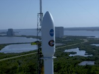
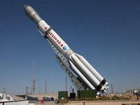

SpaceX успешно вывела новый космический телескоп TESS на орбиту
Компания SpaceX провела успешный запуск с космодрома на мысе Канаверал ракеты-носителя Falcon 9 со спутником TESS (Transiting Exoplanet Survey Satellite) для аэрокосмического агентства NASA, которое будет использовать его для поиска землеподобных планет за пределами Солнечной системы.
После отложенного на день старта запуск прошел штатно. Спустя три минуты после старта произошло отделение первой ступени Falcon 9. Спустя еще шесть минут ступень совершила успешную вертикальную посадку на баржу «Of Course, I Still Love You», находящуюся в Атлантическом океане. Примерно через 50 минут аппарат вышел на заданную орбиту. В рамках его двухлетней миссии аппарат будет заниматься изучением более 200 тысяч звезд, возле которых, с помощью транзитного метода обнаружения, будет производить поиск новых экзопланет.
16 апреля глава SpaceX Илон Маск заявил, что вторую ступень ракеты после ее запуска можно сохранить с помощью гигантского воздушного шара для вечеринок. Компания SpaceX известна тем, что отработала технологию возвращения и посадки разгонных блоков на плавающие в океане беспилотные платформы, а затем их повторного использования.
Напомним, что TESS запущен для замены телескопа «Кеплер», который из-за исчерпавшегося запаса топлива окончательно выйдет из строя в ближайшие месяцы.
TESS имеет четыре телескопа с матрицами на 16,8 мегапикселя, работающими в спектральном диапазоне от 600 до 1000 нанометров. Каждый из этих телескопов имеет поле зрения 24 на 24 градуса. Они направлены таким образом, что вместе образуют единое поле зрения в виде вытянутой полосы. Раз в 27 дней телескоп будет менять зону наблюдения, что позволит ему за два года основной миссии создать карту, покрывающую 85 процентов всей небесной сферы. Этим он сильно отличается от «Кеплера», который постоянно наблюдал за фрагментом всего в четверть процента неба. Правда, такой широкий охват повлек за собой серьезный недостаток. Телескоп будет наблюдать за одним сегментом менее месяца и из-за этого может не обнаружить планеты с большим периодом обращения. Но у TESS будет две зоны, за которыми он будет наблюдать непрерывно в течение года, — они расположены в центре северной и южной полусферы обзора телескопа и образуются из-за перекрытия сегментов при повороте аппарата.
Основными целями TESS станут звезды, расположенные не дальше, чем в 300 световых годах от Земли, и обладающие яркостью от 30 до 100 раз выше, чем те, которые изучал «Кеплер». По мнению ученых, аппарат сможет обнаружить несколько тысяч экзопланет, из которых около 300 могут оказаться не более чем в два раза больше Земли. После обнаружения кандидатов в экзопланеты с помощью орбитального телескопа ученые миссии займутся их подтверждением с помощью наземных телескопов, а также планируемого космического телескопа «Джеймс Уэбб», который, будем надеяться, с этой чередой бесконечных переносов запусков, когда-нибудь да будет запущен в космос.
Западные СМИ: Россия капитулировала перед SpaceX на мировом рынке космических пусков
Если еще в 2013 году Россия контролировала почти половину мирового рынка космических пусков со своим крупным парком ракет, включая ракеты «Протон», то технические проблемы с последними, а также конкуренция со стороны компании SpaceX и других игроков существенно уменьшили долю России, пишет издание Ars Technica. В этом году она может рассчитывать лишь на примерно 10 процентов от общего количества коммерческих запусков спутников, в то время как SpaceX проведет 50 процентов таких пусков.
В прошлом руководители российской космической отрасли вели жесткие разговоры о соперничестве со SpaceX, обещая недорогие и надежные услуги по выводу аппаратов на околоземную и геостационарную орбиту. Например, российская ракетно-космическая корпорация «Энергия» ускоренными темпами разработала новую ракету-носитель «Союз-5», бросив вызов SpaceX.
Но во вторник главный российский руководитель по космическим полетам, заместитель премьер-министра Дмитрий Рогозин сделал в интервью телеканалу РБК весьма примечательное заявление о конкуренции России со SpaceX.
Согласно данным независимого анализа, глобальный рынок космических пусков ежегодно приносит 5,5 миллиарда долларов. Следовательно, лишившись половины своего рынка, российская отрасль потеряет около двух миллиардов, а это значительная доля ее невоенного аэрокосмического бюджета.
Рогозин прав, говоря о том, что производство спутников — это намного более крупная отрасль, приносящая около 14 миллиардов долларов в год. Но и там есть конкуренция, а Россия никогда не занимала доминирующие позиции в изготовлении и обслуживании спутников, в отличие от пусков. Но именно Советский Союз первым запустил спутник и отправил в космос человека — Юрия Гагарина.
Наиболее примечательно в комментариях Рогозина то, что самый прославленный провайдер космических пусков впервые публично уступил этот рынок другим провайдерам, прежде всего ракетной компании, которая появилась лишь в 2002 году, а первую ракету вывела на орбиту менее 10 лет назад, отмечает Ars Technica.